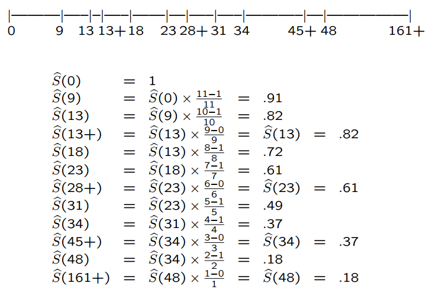
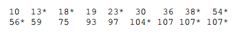
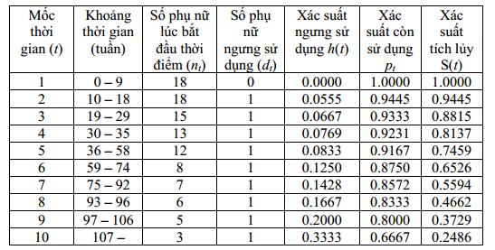
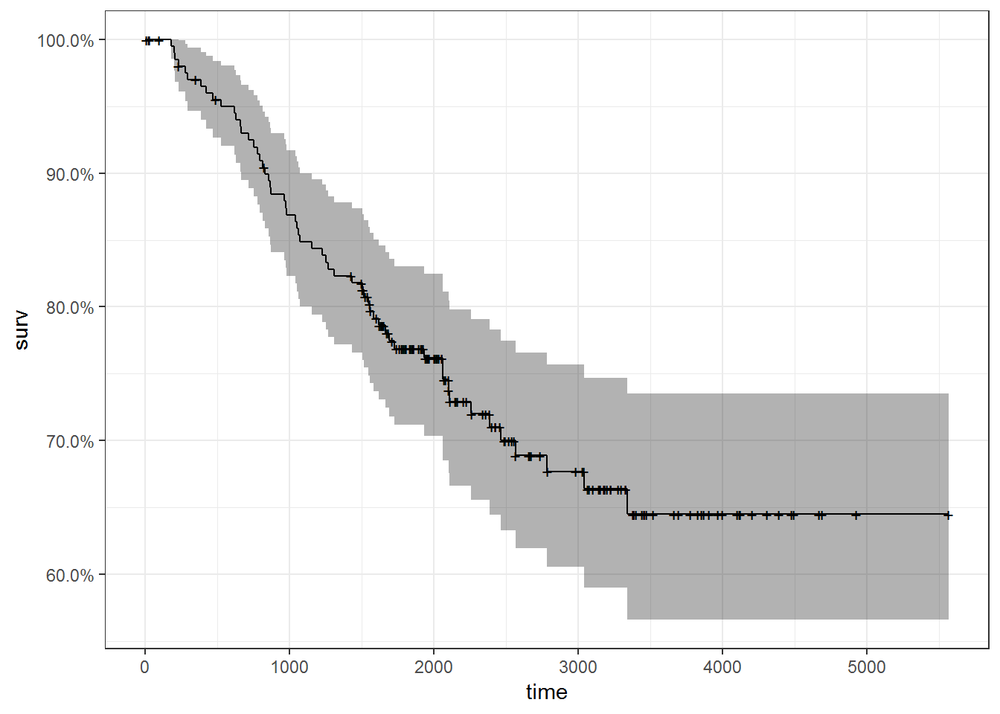
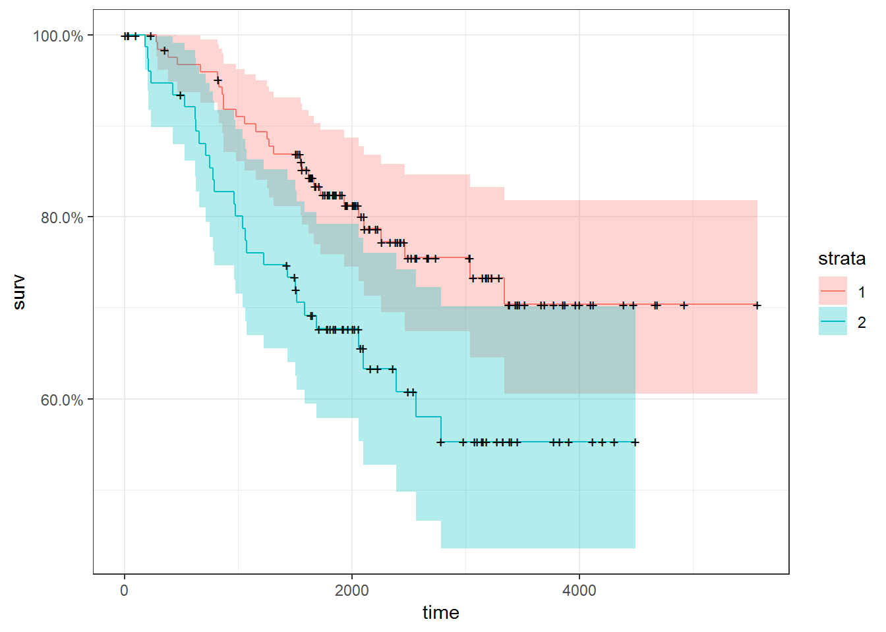

1. Survival analysis¶
1.1. Giới thiệu¶
Survival analysis là kỹ thuật được sử dụng trong việc phân tích thời
gian xảy ra sự kiện nhất định. Ví dụ:
- Thời gian chuyển sang giai đoạn AIDS của bệnh nhân HIV
- Thời gian khách hàng ngưng sử dụng dịch vụ sau khi đăng ký
Trong các ví dụ trên, biến được sử dụng trong phân tích, dự báo là thời gian.
Đối với survival analysis, dữ liệu có các đặc trưng sau:
- Biến phụ thuộc là biến thời gian
- Dữ liệu có đặc trưng
censor(chặn 1 bên):Right censoringlà thuật ngữ mô tả sự kiện diễn ra sau khoảng thời gian phân tích. Ví dụ, nghiên cứ 100 bệnh nhân HIV trong khoảng thời gian 1 năm. Trong thời gian đó, có 10 bệnh nhân chuyển qua AIDS, 90 bệnh nhân còn lại chưa qua AIDS trong một năm đó nhưng ta đều biết rằng họ SẼ chuyển thành AIDS. Dữ liệu kiểu vậy được gọi là right censoring. Thời gian bệnh nhân CHÍNH XÁC chuyển qua AIDS nằm ngoài khoảng thời gian quan sát.Left censoring: Thời gian diễn ra sự kiện trước khoảng thời gian diễn ra quan sát
Đối với các vấn đề như trên, việc dự báo họ chuyển thành AIDS hay không không quan trọng. Quan trọng là KHI NÀO họ chuyển thành AIDS.
Lưu ý:
- Đối với survival analysis, ta thường không có đủ dữ liệu về đối tượng. Ví dụ, trong 100 bệnh nhân tham gia, có bệnh nhân vào nghiên cứu từ tháng 6, tức là khi kết thúc nghiên cứu, bệnh nhân đó chỉ có dữ liệu 6 tháng
- Nếu ta có đầy đủ dữ liệu vè thời gian khách hàng/bệnh nhân từ khi quan sát đến khi xảy ra sự kiện, ta có thể dùng regression thông thường
1.2. Lý thuyết¶
Gọi T là thời gian xảy ra sự kiện từ khi quan sát, với cdf F(.) và
pdf f(.), ta có:
\(F(t) = P(T \leq t) = \int_0^tf(x)dx\) và \(f(t) = \frac{dF(t)}{dt}\)
Survival function S(t):
Với t = 0, S(t) = 1. Với t tiến đến \(\infty\), S(t) tiến đến 0
Bởi vì:
Đạo hàm hai vế, ta được:
**Hàm nguy cơ \(h(t)\) hay \(\lambda(t)\) (hazard function)
cho ta biết xác suất xảy ra sự kiện tại ngay thời điểm t.
Hàm nguy cơ tích lũy (cumulative hazard function):
Từ đó ta có:
Lưu ý:
- Hàm survival S(t) cho ta biết xác suất tích lũy sống qua thời điểm xảy ra sự kiện T
- Hàm F(t) cho ta biết xác suất tích lũy chỉ sống đến thời điểm T
- Hàm nguy cơ h(t) cho ta biết xác suất xảy ra sự kiện NGAY tại thời điểm T.
VD: Xác suất người chết ở tuối 100 rất thấp vì rất ít người sống đến 100 (F(t)). Tuy nhiên, xác suất người chết ở tuổi 100 với điều kiện người đó ĐÃ bước sang tuổi 100 sẽ cao hơn rất nhiều
1.2.1. Ước lượng Kaplan-Meier cho F(t)¶
Xác suất xảy ra hai sự kiện A1 và A2 đồng thời như sau:
Do đó, hàm survival (S) cho ta biết xác suất các đối tượng sống sót qua thời gian t. Bản chất của hàm Survival là xác suất có điều kiện như sau:
P(sống qua t + 1) = P(sống qua t)*P(sống qua t+1| sống qua t)
\(\hat{S}_t=\prod_{k=1}^{t}{p_k}\)
Trong đó:
- \(\hat{p_i}\) là xác suất sống sót sau thời điểm i
- \(n_i\) là số đối tượng quan sát tại khung thời gian i
- \(d_i\) là số đối tượng trải qua sự kiện tại thời điểm i
- \(\hat{q_i}\) là xác suất các đối tượng trải qua sự kiện tại thời điểm i
Ví dụ:

Lưu ý:
- Đường ước lượng KM chỉ dốc xuống khi có sự kiện xảy ra
- Sau thời điểm t = 48, ta không thể ước lượng S(t) được nữa, đường \(\hat{S}(t)\) này được gọi là defective survival function
1.2.2. Ước lượng hàm nguy cơ¶
Trong khoảng thời gian từ \(t_i \leq T \leq t_{i+1}\), với i là khoảng thời gian xảy ra sự kiện, ta có:
Với ví dụ AML, ta có:
Hàm nguy cơ tích lũy
Với ví dụ AML:
Lưu ý:
- Trong survival analysis, các sự kiện được gọi là death, nhưng có thể có rất nhiều cách tiếp cận khác nhau: thời gian mua sản phẩm thứ 2 sau sản phẩm thứ nhất, thời gian KH rời bỏ doanh nghiệp…
Ước lượng này được gọi là ước lượng Kaplan-Meier hay product limit estimate
- Hàm nguy cơ (h hay :raw-latex:`\lamda`) cho ta biết xác suất xảy ra biến cố tại thời điểm t.
Giả sử có 18 bệnh nhân như sau:

Dấu * cho biết bệnh nhân vẫn tiếp tục sử dụng thiết bị

Giải thích:
- Ở thời gian t=2 (tuần 10-18), có một người ngưng sử dụng, xác suất ngưng sử dụng là \(\frac{1}{18}\). Xác suất còn sử dụng p là \(\frac{17}{18}\). Xác suất sống sót t = 2 là \(1*\frac{17}{18}=\frac{17}{18}=0.9445\)
- Ở thời gian t=3 (tuần 19-29), có một người ngưng sử dụng, xác suất ngưng sử dụng là \(\frac{1}{15}\). Xác suất còn sử dụng là \(\frac{14}{15}\). Xác suất sống sót của tất cả sample qua t = 3 là \(\frac{14}{15} * \frac{17}{18}\)
1.3. Ví dụ¶
library(dplyr)
library(survival)
library(KMsurv)
library(ggfortify)
library(ISwR)
library(ISwR)
data(melanom)
melanom %>% head
## no status days ulc thick sex
## 1 789 3 10 1 676 2
## 2 13 3 30 2 65 2
## 3 97 2 35 2 134 2
## 4 16 3 99 2 290 1
## 5 21 1 185 1 1208 2
## 6 469 1 204 1 484 2
#Tạo status == 1 là death
msurv <- with(melanom, Surv(days, status == 1))
#Lưu ý: Các status là 2 và 3 được coi như uncensored
melanom %>% head
## no status days ulc thick sex
## 1 789 3 10 1 676 2
## 2 13 3 30 2 65 2
## 3 97 2 35 2 134 2
## 4 16 3 99 2 290 1
## 5 21 1 185 1 1208 2
## 6 469 1 204 1 484 2
msurv %>% head
## [1] 10+ 30+ 35+ 99+ 185 204
#Phân tích
mfit <- survfit(Surv(days, status == 1) ~ 1, data = melanom)
mfit %>% summary
## Call: survfit(formula = Surv(days, status == 1) ~ 1, data = melanom)
##
## time n.risk n.event survival std.err lower 95% CI upper 95% CI
## 185 201 1 0.995 0.00496 0.985 1.000
## 204 200 1 0.990 0.00700 0.976 1.000
## 210 199 1 0.985 0.00855 0.968 1.000
## 232 198 1 0.980 0.00985 0.961 1.000
## 279 196 1 0.975 0.01100 0.954 0.997
## 295 195 1 0.970 0.01202 0.947 0.994
## 386 193 1 0.965 0.01297 0.940 0.991
## 426 192 1 0.960 0.01384 0.933 0.988
## 469 191 1 0.955 0.01465 0.927 0.984
## 529 189 1 0.950 0.01542 0.920 0.981
## 621 188 1 0.945 0.01615 0.914 0.977
## 629 187 1 0.940 0.01683 0.907 0.973
## 659 186 1 0.935 0.01748 0.901 0.970
## 667 185 1 0.930 0.01811 0.895 0.966
## 718 184 1 0.925 0.01870 0.889 0.962
## 752 183 1 0.920 0.01927 0.883 0.958
## 779 182 1 0.915 0.01981 0.877 0.954
## 793 181 1 0.910 0.02034 0.871 0.950
## 817 180 1 0.904 0.02084 0.865 0.946
## 833 178 1 0.899 0.02134 0.859 0.942
## 858 177 1 0.894 0.02181 0.853 0.938
## 869 176 1 0.889 0.02227 0.847 0.934
## 872 175 1 0.884 0.02272 0.841 0.930
## 967 174 1 0.879 0.02315 0.835 0.926
## 977 173 1 0.874 0.02357 0.829 0.921
## 982 172 1 0.869 0.02397 0.823 0.917
## 1041 171 1 0.864 0.02436 0.817 0.913
## 1055 170 1 0.859 0.02474 0.812 0.909
## 1062 169 1 0.854 0.02511 0.806 0.904
## 1075 168 1 0.849 0.02547 0.800 0.900
## 1156 167 1 0.844 0.02582 0.794 0.896
## 1228 166 1 0.838 0.02616 0.789 0.891
## 1252 165 1 0.833 0.02649 0.783 0.887
## 1271 164 1 0.828 0.02681 0.777 0.883
## 1312 163 1 0.823 0.02713 0.772 0.878
## 1435 161 1 0.818 0.02744 0.766 0.874
## 1506 159 1 0.813 0.02774 0.760 0.869
## 1516 155 1 0.808 0.02805 0.755 0.865
## 1548 152 1 0.802 0.02837 0.749 0.860
## 1560 150 1 0.797 0.02868 0.743 0.855
## 1584 148 1 0.792 0.02899 0.737 0.851
## 1621 146 1 0.786 0.02929 0.731 0.846
## 1667 137 1 0.780 0.02963 0.725 0.841
## 1690 134 1 0.775 0.02998 0.718 0.836
## 1726 131 1 0.769 0.03033 0.712 0.831
## 1933 110 1 0.762 0.03085 0.704 0.825
## 2061 95 1 0.754 0.03155 0.694 0.818
## 2062 94 1 0.746 0.03221 0.685 0.812
## 2103 90 1 0.737 0.03290 0.676 0.805
## 2108 88 1 0.729 0.03358 0.666 0.798
## 2256 80 1 0.720 0.03438 0.656 0.791
## 2388 75 1 0.710 0.03523 0.645 0.783
## 2467 69 1 0.700 0.03619 0.633 0.775
## 2565 63 1 0.689 0.03729 0.620 0.766
## 2782 57 1 0.677 0.03854 0.605 0.757
## 3042 52 1 0.664 0.03994 0.590 0.747
## 3338 35 1 0.645 0.04307 0.566 0.735
mfit %>% autoplot +
theme_bw() +
scale_x_continuous(breaks = seq(0, 6000, 1000))

1.4. Survival function theo giới tính¶
mfit.bysex <- survfit(Surv(days, status == 1) ~ sex,
data = melanom)
mfit.bysex
## Call: survfit(formula = Surv(days, status == 1) ~ sex, data = melanom)
##
## n events median 0.95LCL 0.95UCL
## sex=1 126 28 NA NA NA
## sex=2 79 29 NA 2388 NA
mfit.bysex %>% autoplot() +
theme_bw()

mfit.bysex %>% autoplot(fun = "cloglog") +
theme_bw()

Lưu ý: Các điểm * trên đồ thị là các sự kiện xảy ra thực tế
1.5. So sánh hàm sống sót của 2 nhóm¶
- \(H_0\): \(S_1(.) = S_2(.)\)
- \(H_1\): \(S_1(.) \neq S_2(.)\)
survdiff(Surv(time,status) ~ x, data=aml)
## Call:
## survdiff(formula = Surv(time, status) ~ x, data = aml)
##
## N Observed Expected (O-E)^2/E (O-E)^2/V
## x=Maintained 11 7 10.69 1.27 3.4
## x=Nonmaintained 12 11 7.31 1.86 3.4
##
## Chisq= 3.4 on 1 degrees of freedom, p= 0.0653
Với p < 0.05, ta giữ lại \(H_0\)
1.6. Phương pháp parametric¶
Phương trình Cox:
Trong đó:
- \(\lambda(t)\) là hàm nguy cơ nếu không tính đến các ảnh hưởng của x (còn được gọi là baseline hazard function)
melanom %>% head
## no status days ulc thick sex
## 1 789 3 10 1 676 2
## 2 13 3 30 2 65 2
## 3 97 2 35 2 134 2
## 4 16 3 99 2 290 1
## 5 21 1 185 1 1208 2
## 6 469 1 204 1 484 2
cox.model <- coxph(Surv(days, status == 1) ~ sex + ulc,
data = melanom)
cox.model %>% summary
## Call:
## coxph(formula = Surv(days, status == 1) ~ sex + ulc, data = melanom)
##
## n= 205, number of events= 57
##
## coef exp(coef) se(coef) z Pr(>|z|)
## sex 0.5165 1.6761 0.2667 1.937 0.0528 .
## ulc -1.4180 0.2422 0.2969 -4.775 1.79e-06 ***
## ---
## Signif. codes: 0 '***' 0.001 '**' 0.01 '*' 0.05 '.' 0.1 ' ' 1
##
## exp(coef) exp(-coef) lower .95 upper .95
## sex 1.6761 0.5966 0.9938 2.8268
## ulc 0.2422 4.1289 0.1353 0.4334
##
## Concordance= 0.719 (se = 0.038 )
## Rsquare= 0.145 (max possible= 0.937 )
## Likelihood ratio test= 32.16 on 2 df, p=1.039e-07
## Wald test = 28.59 on 2 df, p=6.206e-07
## Score (logrank) test = 33.51 on 2 df, p=5.277e-08
Giải thích:
- Khi sex tăng thêm 1 đơn vị (chuyển sang nhóm 1 sang 2) thì nguy cơ trải qua sự kiện tăng thêm 0.939 lần